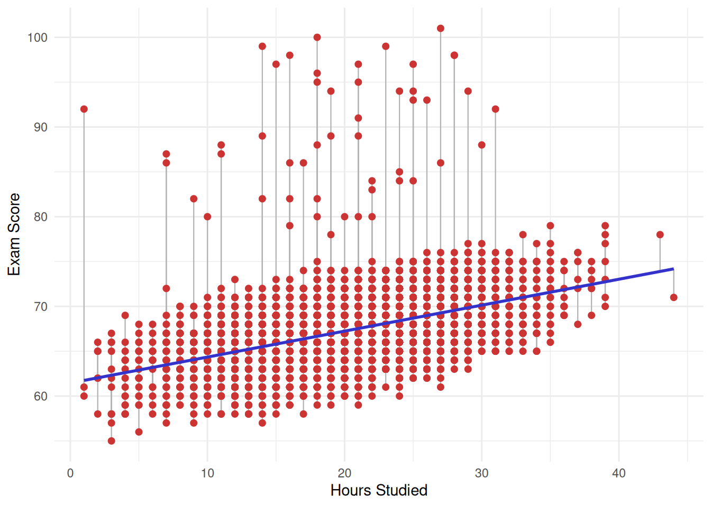

The simplest form of linear regression involves just one independent variable. This is called simple linear regression. Mathematically, it takes the form:
\(Y \approx \beta_0 + \beta_1X\)
In this equation, Y is the dependent variable - the outcome we want to predict. In our example, Y is, for example, the variable “exam_score”. X is the independent variable - the factor we believe is related to the outcome. For instance, X could be “hours_studied”. The symbol \(\beta_0\) is called the intercept. It represents the expected value of Y when X equals zero. In our context, it would represent the expected exam score for a hypothetical student who studies zero hours. The symbol \(\beta_1\) is called the slope. It represents the average change in Y that is associated with a one-unit increase in X. In our example, it tells us how many additional points on the exam a student can expect to gain for each additional hour of studying. Together, \(\beta_0\) and \(\beta_1\) are called the model coefficients or parameters.
Of course, in real life we do not know the true values of \(\beta_0\) and \(\beta_1\). We must estimate them from the data. Once we have estimated these coefficients - and we denote the estimates with a hat symbol as \(\hat{\beta}_0\) and \(\hat{\beta}_1\) - we can write our prediction equation as: \(y = \hat{\beta_0} + \hat{\beta_1}x\). Here, \(\hat{y}\) is the predicted value of the response for a given value \(x\) of the predictor. The hat symbol always indicates that we are dealing with an estimate rather than a true and known quantity.
In practice, a single predictor is rarely sufficient to explain all the variation in the response. A student’s exam score is not determined by study hours alone - attendance, prior academic performance, tutoring, and many other factors play a role. Multiple linear regression extends the simple model to accommodate several predictors simultaneously. The general formula is:
\(Y = \beta_0 + \beta_1X_1 + \beta_2X_2 + ... + \beta_pX_p + \epsilon\)
In this equation, \(X_1\), \(X_2\), \(X_3\), …, \(X_p\) represent \(p\) different independent variables, and \(\beta_1\), \(\beta_2\), …, \(\beta_p\) are their corresponding slope coefficients. Each coefficient \(\beta_j\) represents the average change in Y associated with a one-unit increase in the predictor \(\beta_j\), while holding all other predictors constant which distinguishes multiple regression from simply running many separate simple regressions. The term \(\epsilon\) represents the error term - it captures everything that our model does not explain, including the influence of unmeasured variables, measurement error, and the inherent randomness in human behavior.
In our student performance example, a multiple linear regression model might look like this:
exam_score = \(\beta_0\) + \(\beta_1\) × hours_studied + \(\beta_2\) × attendance + \(\beta_3\) × previous_scores + \(\beta_4\) × sleep_hours + \(\beta_5\) × tutoring_sessions + \(\beta_6\) × physical_activity + \(\epsilon\)
This model allows us to estimate the unique contribution of each predictor to the exam score. For instance, \(\beta_1\) tells us the expected change in exam score for each additional hour of study, after accounting for the effects of attendance, previous scores, sleep, tutoring, and physical activity. This is fundamentally different from simple linear regression, where \(\beta_1\) would capture the total association between study hours and exam scores without adjusting for any other factor.
1 Estimating the Coefficients of Parameters
The key question is how do we actually find the best values for our coefficient estimates \(\hat{\beta}_0\), \(\hat{\beta}_1\), …, \(\hat{\beta}_p\). The answer lies in the least squares method, which is the most common approach for fitting a linear regression model. The basic idea is intuitive: we want our predicted values \(\hat{y}_i\) to be as close as possible to the actual observed values \(y_0\) for every observation in our dataset.
For each observation \(i\), the difference between the observed value and the predicted value is called the residual, denoted \(e_i = y_i - \hat{y}_i\). The residual tells us how much our model’s prediction misses the actual outcome for that particular student. Some residuals will be positive (when the model underpredicts) and some will be negative (when the model overpredicts).
: Simple Linear Regression: Exam Score ~ Hours Studied
To get an overall measure of how well the model fits all the data, we cannot simply add up the residuals, because the positive and negative ones would cancel each other out. Instead, we square each residual and then sum them all up. This quantity is called the residual sum of squares (RSS):
\(RSS = e_1^2 + e_2^2 + ... + e_n^2 = \sum(y_i - \hat{y}_i)^2\)
The least squares method chooses the coefficient estimates \(\hat{\beta}_0\), \(\hat{\beta}_1\), …, \(\hat{\beta}_p\) that minimize this RSS. In other words, the least squares approach finds the line (in simple regression) or the hyperplane (in multiple regression) that makes the total squared prediction error as small as possible. This is a well-defined mathematical optimization problem, and the solution can be computed using calculus. For simple linear regression, the formulas for the minimizers have a closed-form expression:
\(\hat{\beta}_0 = \bar{y} - \hat{\beta}_1\hat{x}\)
\(\hat{\beta}_1 = \frac{\sum_{i = 1}^n(x_i - \bar{x})(y_i - \bar{y})}{\sum_{i = 1}^n(x_i - \bar{x})^2}\)
Here, \(\bar{x}\) and \(\bar{y}\) are the sample means of the predictor and the response, respectively. The formula for \(\hat{\beta}_1\) has an intuitive interpretation: it measures the degree to which X and Y vary together (the numerator captures their joint variation) relative to the total variation in X (the denominator). For multiple linear regression, the coefficient estimates are computed using matrix algebra.
The beauty of the least squares method is that it provides a principled, objective way to estimate the model parameters. It does not require any subjective judgment about what the “best” line should look like - the method simply finds the line that minimizes the total squared distance between the observed data points and the fitted line.
To fit a simple linear regression model in R, we use the lm() function, which stands for linear model. The syntax follows the pattern lm(response ~ predictor, data = dataset). The tilde symbol (~) can be read as “is modeled as a function of”. For our simple linear regression of “exam_score” onto “hours_studied”, we write:
simple_model <- lm(
exam_score ~ hours_studied,
data = student_performance
)The lm() function fits the model by computing the least squares coefficient estimates. The summary() function then provides a detailed output that includes the estimated coefficients, their standard errors, t-statistics, p-values, the residual standard error, and the \(R^2\) statistic. The confint() function computes the 95% confidence intervals for each coefficient estimate, which tell us the range of plausible values for the true population parameters.
summary(simple_model)
Call:
lm(formula = exam_score ~ hours_studied, data = student_performance)
Residuals:
Min 1Q Median 3Q Max
-8.532 -2.243 -0.111 2.046 33.493
Coefficients:
Estimate Std. Error t value Pr(>|t|)
(Intercept) 61.456984 0.149196 411.92 <2e-16 ***
hours_studied 0.289291 0.007154 40.44 <2e-16 ***
---
Signif. codes: 0 '***' 0.001 '**' 0.01 '*' 0.05 '.' 0.1 ' ' 1
Residual standard error: 3.483 on 6605 degrees of freedom
Multiple R-squared: 0.1984, Adjusted R-squared: 0.1983
F-statistic: 1635 on 1 and 6605 DF, p-value: < 2.2e-16The lm() fits the model by computing the least squares coefficient estimates, and the output shows the estimated parameters of a simple linear regression model predicting exam score from hours studied.
summary(simple_model)$coefficients[, "Estimate"] (Intercept) hours_studied
61.4569836 0.2892906 The intercept (\(\hat{\beta}_0\)) is estimated at 61.4570. This means that when “hours_studied” equals zero, the model predicts an exam score of approximately 61.46 points. In substantive terms, a hypothetical student who does not study at all would be expected to score about 61.5 on the exam, according to this model. This makes intuitive sense - students would still have some baseline level of knowledge from attending classes, even without additional study outside the classroom. The slope for “hours_studied” (\(\hat{\beta}_1\)) is estimated at 0.289. This is the key coefficient for our research question. It tells us that for each additional hour of study per week, a student’s exam score is expected to increase by approximately 0.29 points, on average. So a student who studies 10 hours more per week than another student would be expected to score about 2.89 points higher on the exam.
For the multiple linear regression model, we simply add more predictors to the right side of the formula, separated by the + sign:
multiple_model <- lm(
exam_score ~ hours_studied + attendance + previous_scores + sleep_hours + tutoring_sessions + physical_activity,
data = student_performance
)
summary(multiple_model)
Call:
lm(formula = exam_score ~ hours_studied + attendance + previous_scores +
sleep_hours + tutoring_sessions + physical_activity, data = student_performance)
Residuals:
Min 1Q Median 3Q Max
-5.4391 -1.1316 -0.1619 0.8435 30.9951
Coefficients:
Estimate Std. Error t value Pr(>|t|)
(Intercept) 40.927132 0.338284 120.985 < 2e-16 ***
hours_studied 0.291579 0.005069 57.517 < 2e-16 ***
attendance 0.197978 0.002631 75.262 < 2e-16 ***
previous_scores 0.048123 0.002110 22.809 < 2e-16 ***
sleep_hours -0.018022 0.020686 -0.871 0.384
tutoring_sessions 0.493505 0.024679 19.997 < 2e-16 ***
physical_activity 0.143997 0.029449 4.890 1.03e-06 ***
---
Signif. codes: 0 '***' 0.001 '**' 0.01 '*' 0.05 '.' 0.1 ' ' 1
Residual standard error: 2.467 on 6600 degrees of freedom
Multiple R-squared: 0.5982, Adjusted R-squared: 0.5979
F-statistic: 1638 on 6 and 6600 DF, p-value: < 2.2e-16This tells R to fit a model that predicts “exam_score” using all six quantitative predictors simultaneously. The least squares method will estimate a separate slope coefficient for each predictor, along with a single intercept, by minimizing the total RSS across all 6,607 observations. Our multiple linear regression model includes six quantitative predictors simultaneously.
summary(multiple_model)$coefficients[, "Estimate"] (Intercept) hours_studied attendance previous_scores
40.92713226 0.29157938 0.19797753 0.04812256
sleep_hours tutoring_sessions physical_activity
-0.01802166 0.49350511 0.14399695 The estimated model can be written as:
Exam_Score ≈ 40.93 + 0.292 × Hours_Studied + 0.198 × Attendance + 0.048 × Previous_Scores − 0.018 × Sleep_Hours + 0.494 × Tutoring_Sessions + 0.144 × Physical_Activity
The intercept (\(\hat{\beta}_0\)) is now estimated at 40.927. This is substantially lower than in the simple model (61.46), which makes sense. In the simple model, the intercept represented the predicted score when only “hours_studied” was zero. In the multiple model, the intercept represents the predicted score when all six predictors are on their average value. Such a student is of course entirely hypothetical and unrealistic, which is why we should not over-interpret the intercept in multiple regression. Its main role is mathematical - it anchors the regression plane in the right position.
The coefficient for “hours_studied” is 0.292, which is remarkably similar to its value in the simple regression (0.289). This tells us something important: the relationship between study hours and exam scores is robust - it persists even after we account for the effects of attendance, prior scores, sleep, tutoring, and physical activity. In substantive terms, holding all other factors constant, each additional hour of study per week is associated with an increase of about 0.29 points on the exam.
The coefficient for “attendance” is 0.198, meaning that each additional percentage point of class attendance is associated with about 0.20 additional points on the exam, after controlling for the other variables. To put this in perspective, a student who attends 90% of classes versus one who attends 70% of classes (a 20 percentage-point difference) would be expected to score about 3.96 points higher, all else being equal. The coefficient for “previous_scores” is 0.048. This means that for each additional point a student earned on their previous assessments, their exam score is expected to increase by about 0.048 points, holding other factors constant. A student whose prior scores are 20 points higher than another student’s would be expected to score only about 0.96 points higher on this exam. This suggests that while past performance does predict future performance, its incremental contribution is small once study habits and attendance are already accounted for. The coefficient for “sleep_hours” is -0.018. The negative sign suggests that more sleep is associated with slightly lower exam scores, meaning that each additional hour of sleep per night is associated with a decrease of about 0.02 points on the exam, after controlling for the other variables. The coefficient for “tutoring_sessions” is 0.494, the largest individual slope coefficient in the model. Each additional tutoring session is associated with about half a point increase on the exam. The coefficient for physical_activity is 0.144, meaning that each additional hour per week of physical activity is associated with about 0.14 additional exam points, after controlling for the other variables.
2 Accuracy of the Coefficient Estimates
In the previous section, we estimated the coefficients of our linear regression models using the least squares method. We found, for instance, that the estimated slope for “hours_studied” was 0.289 in the simple model and 0.292 in the multiple model. But a natural and critically important question follows: How accurate are these estimates? If we collected a different sample of 6,607 students, would we get the same coefficient estimates, or would they change? And how confident can we be that the true relationship between study hours and exam scores is actually positive, rather than our estimate simply being a product of random chance in this particular sample?
These questions lie at the heart of statistical inference, and the tools we use to answer them - standard errors, confidence intervals, t-statistics, and p-values - are among the most important concepts in all of applied statistics. To understand these tools, we must first understand the concept of the error term and the distinction between the population regression line and our estimated regression line.
When we write the linear regression model as \(Y = \beta_0 + \beta_1X + \epsilon\), we are making a statement about the true, underlying relationship between X and Y in the entire population - not just in our particular sample. The coefficients \(\beta_0\) and \(\beta_1\) are the true population parameters, which we will never know exactly. The term \(\epsilon\) is the error term, and it represents everything that our model fails to capture. There are several reasons why the error term exists.
First, the true relationship between the predictor and the response may not be perfectly linear - there may be curvature or other patterns that a straight line cannot capture.
Second, there may be other variables that influence the response but are not included in our model.
Third, there is always some inherent randomness and measurement error in any data we collect.
The error term absorbs all of these sources of discrepancy between what our model predicts and what actually happens.
In our student_performance example, even if we knew the exact true values of \(\beta_0\) and \(\beta_1\) for the relationship between “hours_studied” and “exam_score” in the entire population of all students, we still could not predict any individual student’s exam score perfectly. Some students who study 20 hours per week will score higher than the regression line predicts, and others will score lower. These deviations are captured by \(\epsilon\). We typically assume that the error term has a mean of zero (meaning the model does not systematically overpredict or underpredict), that the errors for different observations are independent of each other, and that the errors have a constant variance \(\sigma^2\) across all values of X.
The true population regression line, \(Y = \beta_0 + \beta_1X\), represents the best linear summary of the relationship between X and Y in the entire population. Our estimated regression line, \(\hat{y} = \hat{\beta}_0 + \hat{\beta}_1x\), is our best approximation of this population line based on the data we have. The key insight is that \(\hat{\beta}_0\) and \(\hat{\beta}_1\) are estimates of the true parameters, computed from one particular sample. If we were to draw a different random sample of 6,607 students, we would get slightly different estimates. This variability across samples is what motivates the need for standard errors, confidence intervals, and hypothesis tests - they allow us to quantify how much uncertainty surrounds our estimates.
2.1 Standard Errors
The standard error of a coefficient estimate measures how much that estimate would vary if we repeatedly drew new samples from the same population and re-estimated the model each time. In other words, it quantifies the precision of our estimate. A small standard error means that our estimate is very precise - different samples would give us very similar coefficient values. A large standard error means that our estimate is imprecise - it might change substantially from sample to sample.
The standard error of the coefficients or parameters in linear regression is given by the formulas:
\(SE(\hat{\beta}_0) = \sigma^2 [\frac{1}{n} + \frac{\bar{x}^2}{\sum_{i =1}^n(x_i - \bar{x})^2}]\)
\(SE(\hat{\beta}_1) = \frac{\sigma}{\sum_{i=1}^n(x_i - \bar{x})^2}\)
This formulas reveals two important things. First, the standard error depends on \(\sigma\), the standard deviation of the error term. If there is a lot of noise in the data (large \(\sigma\)), then the estimated slope will be less precise, because the true signal is harder to detect amid the noise. Second, the standard error depends on the spread of the predictor values. When the \(x_i\) values are more spread out (that is, when \(\sum_{i=1}^n(x_i - \bar{x})^2\) is large), the standard error is smaller. Intuitively, this makes sense: if we observe students who study anywhere from 1 to 44 hours per week, we have a much better basis for estimating the slope than if all students studied between 19 and 21 hours. A wider range of predictor values gives us more “leverage” to pin down the relationship. In practice, the true value of \(\sigma\) is unknown and must be estimated from the data. This estimate is the Residual Standard Error.
summary(simple_model)$coefficients[, "Std. Error"] (Intercept) hours_studied
0.149196057 0.007154262 Looking at our simple regression output, the standard error for the “hours_studied” coefficient is 0.00715. This is very small relative to the coefficient estimate of 0.289, which tells us that our estimate is highly precise. The reason for this high precision is our large sample size combined with a good spread in study hours.
summary(multiple_model)$coefficients[, "Std. Error"] (Intercept) hours_studied attendance previous_scores
0.338284044 0.005069489 0.002630507 0.002109816
sleep_hours tutoring_sessions physical_activity
0.020685503 0.024678804 0.029448624 In the multiple regression model, the standard error for “hours_studied” is even smaller at 0.00507. This decrease occurs because the multiple model has a lower RSE (2.467 compared to 3.483), which means there is less unexplained noise once we account for the additional predictors - and less noise translates directly into more precise coefficient estimates. The standard errors for the other coefficients in the multiple model tell a similar story. “attendance” has a standard error of 0.00263, “previous_scores” has 0.00211, “sleep_hours” has 0.0207, “tutoring_sessions” has 0.0247, and “physical_activity” has 0.0294. Notice that “sleep_hours” has a relatively large standard error compared to its coefficient estimate (-0.018), which foreshadows the fact that this coefficient will not be statistically significant - the estimate is so imprecise relative to its magnitude that we cannot confidently distinguish it from zero.
A confidence interval provides a range of plausible values for the true population parameter. The 95% confidence interval for a regression coefficient is constructed using the formula:
\(\hat{\beta}_j \pm 2 \times SE(\hat{\beta}_j)\)
More precisely, the multiplier is not exactly 2 but rather the 97.5th percentile of the t-distribution with \(n - p - 1\) degrees of freedom, where n is the sample size and p is the number of predictors. For large samples like ours (n = 6,607), this value is very close to 1.96, which is approximately 2. The interpretation of a 95% confidence interval is as follows: if we were to repeat the study many times, drawing a new random sample each time and computing a 95% confidence interval from each sample, then 95% of those intervals would contain the true population parameter. It is important to note that this does not mean there is a 95% probability that the true parameter lies within our specific interval - the true parameter is a fixed value, not a random quantity. Rather, the 95% refers to the long-run reliability of the procedure.
confint(simple_model) 2.5 % 97.5 %
(Intercept) 61.164511 61.7494561
hours_studied 0.275266 0.3033153Let us examine the confidence intervals from our outputs. In the simple regression, the 95% confidence interval for the “hours_studied” coefficient is [0.275, 0.303]. This interval is narrow, reflecting the high precision of our estimate, and it lies entirely above zero. We can therefore state with 95% confidence that the true effect of one additional hour of study falls somewhere between 0.275 and 0.303 points on the exam.
confint(multiple_model) 2.5 % 97.5 %
(Intercept) 40.26398610 41.59027841
hours_studied 0.28164155 0.30151722
attendance 0.19282088 0.20313417
previous_scores 0.04398664 0.05225848
sleep_hours -0.05857194 0.02252862
tutoring_sessions 0.44512667 0.54188355
physical_activity 0.08626812 0.20172578In the multiple regression, the confidence intervals are similarly informative. For “attendance”, the interval is [0.193, 0.203], meaning we are 95% confident that each additional percentage point of attendance is associated with between 0.19 and 0.20 additional exam points, after controlling for the other predictors. For “tutoring_sessions”, the interval is [0.445, 0.542], and for “physical_activity” it is [0.086, 0.202] - all comfortably above zero. The critical case is “sleep_hours”, whose confidence interval is [-0.059, 0.023]. Because this interval spans from a negative value to a positive value, crossing zero in the middle, we cannot determine whether the true effect of sleep hours on exam scores is positive, negative, or simply zero.
2.2 Hypothesis Testing and the t-Statistic
Hypothesis testing provides a formal framework for determining whether the relationship we observe in our sample is likely to reflect a real relationship in the population, or whether it could plausibly be due to random chance. In linear regression, the most common hypothesis test for each coefficient is:
The null hypothesis (\(H_0\)): \(\beta_j = 0\), meaning there is no relationship between \(X_j\) and Y.
The alternative hypothesis (\(H_a\)): \(\beta_j \neq 0\), meaning there is some relationship between \(X_j\) and Y.
If the null hypothesis is true and the predictor truly has no effect on the response, then the true slope is zero, and any non-zero slope we estimate from our sample is simply due to random noise. The t-statistic allows us to assess how likely this scenario is.
The t-statistic is computed as:
\(t = \frac{\hat{\beta}_j}{SE(\hat{\beta}_j)}\)
This is simply the coefficient estimate divided by its standard error. It measures how many standard errors the coefficient estimate is away from zero. A t-statistic close to zero means that the coefficient estimate is small relative to its uncertainty, which is consistent with the null hypothesis. A t-statistic far from zero (either very positive or very negative) means that the coefficient estimate is large relative to its uncertainty, which provides evidence against the null hypothesis.
Under the null hypothesis, the t-statistic follows a t-distribution with \(n - p - 1\) degrees of freedom, where n is the number of observations and p is the number of predictors. For large samples, the t-distribution is virtually identical to the standard normal distribution, so a t-statistic beyond roughly \(\pm2\) is generally considered statistically significant at the 5% level, and beyond roughly \(\pm2,75\) is significant at the 1% level.
summary(simple_model)$coefficients[, "t value"] (Intercept) hours_studied
411.92096 40.43612 In the simple regression model, the t-statistic for “hours_studied” is 40.44. This means the coefficient estimate is more than 40 standard errors away from zero. To put this in perspective, if study hours truly had no effect on exam scores, observing a t-statistic this large would be essentially impossible - it would be like flipping a fair coin and getting heads 40 times in a row, except far less likely even than that. This gives us overwhelming evidence that the relationship between study hours and exam scores is real.
summary(multiple_model)$coefficients[, "t value"] (Intercept) hours_studied attendance previous_scores
120.9845189 57.5165220 75.2621118 22.8088935
sleep_hours tutoring_sessions physical_activity
-0.8712218 19.9971244 4.8897684 In the multiple regression model, the t-statistics reveal a clear hierarchy of evidence. “attendance” has the largest t-statistic at 75.26, making it the most precisely estimated and most strongly significant predictor. “hours_studied” follows with t = 57.52, then “previous_scores” at 22.81, “tutoring_sessions” at 20.00, and “physical_activity” at 4.89. All of these are far beyond any conventional significance threshold. The exception, as we have seen, is “sleep_hours”, with a t-statistic of only -0.871. This value is well within the range we would expect to see even if the true coefficient were zero - it is less than one standard error away from zero, which is entirely unremarkable.
2.3 The p-Value
The p-value is the probability of observing a t-statistic as extreme as the one we actually computed, assuming that the null hypothesis is true. In other words, it answers the question: if there were truly no relationship between this predictor and the response, how surprising would our observed result be?
A small p-value (typically below 0.05) indicates that the observed result would be very surprising under the null hypothesis, and we therefore reject the null hypothesis in favor of the alternative. A large p-value indicates that the observed result is not particularly surprising under the null hypothesis, and we therefore fail to reject it. It is important to emphasize that “failing to reject” is not the same as “accepting” the null hypothesis - it simply means we do not have enough evidence to conclude that a relationship exists.
summary(simple_model)$coefficients[, "Pr(>|t|)"] (Intercept) hours_studied
0.000000e+00 1.286349e-319 In our simple regression output, the p-value for “hours_studied” is less than \(2 \times 10^{-16}\), which R displays as “<2e-16”. This is the smallest p-value that R can represent numerically, and it is so close to zero that for all practical purposes it means the probability of observing our results by chance alone is essentially zero.
summary(multiple_model)$coefficients[, "Pr(>|t|)"] (Intercept) hours_studied attendance previous_scores
0.000000e+00 0.000000e+00 0.000000e+00 6.622656e-111
sleep_hours tutoring_sessions physical_activity
3.836647e-01 2.030741e-86 1.033431e-06 In the multiple regression, the p-values for “hours_studied”, “attendance”, “previous_scores”, and “tutoring_sessions” are all less than \(2 \times 10^{-16}\), and the p-value for “physical_activity” is approximately \(1.03 \times 10^{-6}\) (or about one in a million). All of these are far below any conventional significance threshold, providing overwhelming evidence that these predictors are genuinely related to exam scores.
The p-value for “sleep_hours”, however, is 0.384. This means that if sleep hours truly had no effect on exam scores (after controlling for the other predictors), there would be about a 38.4% probability of observing a coefficient estimate as far from zero as the one we found. In other words, our observed result is entirely unsurprising under the null hypothesis - it is the kind of result we would expect to see by random chance alone roughly 38 times out of 100. We therefore have no grounds to reject the null hypothesis for “sleep_hours”, and we conclude that this variable does not have a statistically significant linear relationship with exam scores in this model.
3 Model Fit
In the previous section, we focused on assessing the accuracy of individual coefficient estimates - asking whether each specific predictor is significantly related to the response. Now we shift our perspective and ask a broader question: how well does the model as a whole fit the data? In other words, once we have estimated our regression equation, how good is it at capturing the actual patterns in student exam scores? Is the model useful, or does it leave too much unexplained?
To answer these questions, we rely on three complementary statistics that appear at the bottom of every regression summary in R: the Residual Standard Error (RSE), the \(R^2\) statistic, and the F-statistic. Each of these measures provides a different lens through which to evaluate the overall quality of the model, and together they give us a well-rounded picture of model performance.
3.1 Residual Standard Error
The Residual Standard Error (RSE) is perhaps the most intuitive measure of model accuracy, because it is expressed in the same units as the dependent variable. It estimates the standard deviation of the error term \(\epsilon\) - that is, it tells us the typical size of the prediction errors our model makes. The RSE is computed using the formula:
\(RSE = \sqrt{\frac{RSS}{n - p - 1}}\)
In this formula, RSS is the residual sum of squares (the sum of all squared residuals), n is the number of observations, and p is the number of predictors. The denominator uses \(n - p - 1\) rather than simply n because we have used up \(p + 1\) degrees of freedom in estimating the intercept and the p slope coefficients. This correction ensures that the RSE is an unbiased estimate of the true error standard deviation \(\sigma\). The concept of degrees of freedom can be understood intuitively: each parameter we estimate “uses up” one piece of information from the data, leaving fewer independent pieces of information available to estimate the error variance.
summary(simple_model)$sigma[1] 3.483406In our simple regression model, the RSE is 3.483. This means that, on average, the actual exam scores deviate from the scores predicted by the model by approximately 3.48 points. Given that the mean exam score in our dataset is 67.24, we can express this as a percentage error of about 5.18% (3.483 / 67.24 × 100). Whether this level of error is acceptable depends entirely on the context of the research. In educational research, where human behavior is inherently variable and influenced by countless unmeasured factors like test-day anxiety, mood, or the specific questions that happened to appear on the exam, a prediction error of about 3.5 points may be considered quite reasonable. However, from a pure prediction standpoint, it also tells us that our simple model leaves a lot of room for improvement - knowing only how many hours a student studies does not allow us to predict their exam score with great precision.
summary(multiple_model)$sigma[1] 2.467039In our multiple regression model, the RSE drops to 2.467. This represents a substantial improvement over the simple model - the average prediction error has decreased by about 29%, from 3.48 to 2.47 points. The percentage error relative to the mean is now approximately 3.67% (2.467 / 67.24 × 100). This decrease makes intuitive sense: by adding attendance, previous scores, tutoring sessions, and physical activity to the model, we have incorporated additional information that helps explain why some students score higher than others. The model now captures more of the systematic patterns in the data, leaving less to the error term. It is worth noting, however, that the RSE can never reach zero unless our model perfectly predicts every single observation, which is essentially impossible with real-world data involving human behavior. There will always be some irreducible error that no model can eliminate.
The RSE also plays a foundational role in the other inference tools we discussed earlier. Recall that the standard errors of the coefficient estimates depend on the RSE - a smaller RSE leads to smaller standard errors, which in turn leads to larger t-statistics and smaller p-values. This is exactly what we observed when comparing our two models: the multiple model had a smaller RSE, which produced more precise coefficient estimates and stronger evidence of statistical significance for the predictors that truly matter.
One important limitation of the RSE is that it is measured in the units of the response variable, which makes it difficult to compare across different studies or datasets with different response scales. If another researcher studied a test scored on a scale of 0 to 500, their RSE would naturally be much larger in absolute terms, even if their model were proportionally just as accurate as ours. This limitation motivates the need for a scale-independent measure of model fit, which is exactly what the \(R^2\) statistic provides.
3.2 \(R^2\)
The \(R^2\) statistic, also known as the coefficient of determination, is one of the most commonly reported measures of model fit in applied research. Unlike the RSE, \(R^2\) is a proportion that always takes a value between 0 and 1, making it easy to interpret and compare across studies regardless of the scale of the response variable. \(R^2\) answers a very specific question: what fraction of the total variation in the response variable is explained by the model? To understand \(R^2\), we need to consider two quantities.
The first is the Total Sum of Squares (TSS), defined as:
\(TSS = \sum(y_i - \hat{y})^2\)
This measures the total variability in the response variable before any regression is performed. It is simply the sum of the squared deviations of each observed exam score from the overall mean exam score. In our dataset, this captures the full extent to which students’ exam scores differ from one another. Some of this variation is systematic and some of it is random noise.
The second quantity is the Residual Sum of Squares (RSS), which we have already encountered:
\(RSS = \sum(y_i - \hat{y}_i)^2\)
This measures the variability that remains unexplained after fitting the regression model. It is the sum of the squared residuals - the squared differences between the actual exam scores and the scores predicted by the model.
The \(R^2\) statistic is then defined as:
\(R^2 = \frac{(TSS - RSS)}{TSS} = 1 - \frac{RSS}{TSS}\)
The numerator, TSS - RSS, represents the amount of variability in the response that is explained by the regression - it is the reduction in prediction error achieved by using the model instead of simply predicting the mean for every student. Dividing by TSS converts this into a proportion.
When \(R^2\) is close to 1, it means that the model explains nearly all of the variation in the response, and the RSS is very small compared to the TSS. In such a case, the predicted values \(\hat{y}_i\) are very close to the actual values \(y_i\), and the model provides an excellent fit. When \(R^2\) is close to 0, the model explains very little of the variation, and using the model is hardly better than simply predicting the mean exam score for every student.
summary(simple_model)$r.squared[1] 0.1984301In our simple regression model, \(R^2\) is 0.1984. This tells us that “hours_studied” alone explains approximately 19.84% of the total variation in exam scores. In other words, about one-fifth of the differences in exam scores among students can be attributed to differences in how many hours they study. This is a meaningful finding - it confirms that study time matters - but it also reveals that roughly 80% of the variation is driven by other factors not captured in this simple model.
summary(multiple_model)$r.squared[1] 0.5982496In our multiple regression model, \(R^2\) jumps to 0.5982. Now the model explains approximately 59.82% of the variation in exam scores. This is a dramatic improvement - by adding attendance, previous scores, tutoring sessions, and physical activity as predictors alongside study hours, we have nearly tripled the proportion of explained variance. The remaining approximately 40% of the variation is still unexplained, presumably due to factors that are not included as quantitative predictors in this model - things like motivation level, family income, teacher quality, peer influence, and other qualitative variables in our dataset that we have not yet incorporated, as well as entirely unmeasured factors like test anxiety, the specific content of the exam, or simple luck.
What constitutes a “good” \(R^2\) depends heavily on the field of study. In the physical sciences, where experiments can be tightly controlled and measurement is very precise, \(R^2\) values above 0.95 are common and expected. In the social sciences and education research, where human behavior is inherently noisy and influenced by a vast number of interacting factors, \(R^2\) values between 0.30 and 0.60 are often considered quite good for observational studies. Our multiple model’s \(R^2\) of 0.598 is therefore quite respectable for educational data - it suggests that we have identified a set of predictors that genuinely capture a large portion of what drives student performance.
It is critical to understand one important caveat about \(R^2\): it will always increase (or at least never decrease) when more predictors are added to the model, even if those predictors are completely unrelated to the response. This happens because adding any variable, even a random one, gives the model more flexibility to fit the training data, and the RSS can only go down or stay the same - it can never go up. This means that a high \(R^2\) does not necessarily indicate a good model; it could simply reflect the fact that many predictors have been thrown in. To guard against this problem, the Adjusted \(R^2\) was developed. The Adjusted \(R^2\) modifies the standard \(R^2\) by imposing a penalty for each additional predictor. If adding a new predictor does not reduce the RSS enough to offset the penalty for the lost degree of freedom, the Adjusted \(R^2\) will actually decrease, signaling that the added predictor is not contributing meaningfully.
summary(simple_model)$adj.r.squared[1] 0.1983088summary(multiple_model)$adj.r.squared[1] 0.5978844In our simple model, the Adjusted \(R^2\) is 0.1983, virtually identical to \(R^2\) because there is only one predictor and the penalty is negligible. In our multiple model, the Adjusted \(R^2\) is 0.5979, also nearly identical to the regular \(R^2\) of 0.5982. The fact that the Adjusted \(R^2\) barely differs from \(R^2\) in the multiple model tells us that all six predictors (or at least most of them) are genuinely contributing to the model’s explanatory power - the improvement in fit is not merely an artifact of adding more variables.
It is also worth noting the connection between \(R^2\) and correlation. In simple linear regression, \(R^2\) is exactly equal to the square of the Pearson correlation coefficient r between X and Y. In our case, \(R^2\) = 0.1984 for the simple model, so the correlation between “hours_studied” and “exam_score” is \(r = \sqrt{0.1984} \approx 0.445\). In multiple regression, this simple relationship no longer holds (because there are multiple predictors), but \(R^2\) can be shown to equal the squared correlation between the observed values \(y_i\) and the fitted values \(\hat{y}_i\). This provides a nice intuitive interpretation: \(R^2\) tells us how closely the model’s predictions track the actual outcomes.
3.3 F-statistic
While the t-statistic and its associated p-value allow us to test whether each individual predictor is significantly related to the response, the F-statistic addresses a different and more fundamental question: is the model as a whole useful? Specifically, the F-statistic tests the null hypothesis that all slope coefficients in the model are simultaneously equal to zero \(H_0: \beta_1 = \beta_2 = ... = \beta_p = 0\) against the alternative hypothesis:
\(H_a\): at least one \(\beta_j\) is non-zero.
If the null hypothesis is true, then none of the predictors have any relationship with the response, and the model is no better than simply predicting the mean for every observation. The F-statistic is computed as:
\(F = \frac{\frac{TSS - RSS}{p}}{\frac{RSS}{n - p -1}}\)
The numerator measures how much of the total variance the model explains, divided by the number of predictors p. The denominator measures how much variance remains unexplained, divided by the residual degrees of freedom. If the model is no better than chance, the numerator and denominator should be roughly equal, producing an F-statistic close to 1. If the model captures real patterns in the data, the numerator will be much larger than the denominator, producing a large F-statistic.
One might reasonably ask: why do we need the F-statistic at all when we already have individual t-tests for each coefficient? The answer lies in the multiple testing problem. When we have many predictors, each with its own t-test, the probability of finding at least one “significant” result by pure chance increases dramatically. For example, if we tested 100 completely useless predictors at the 5% significance level, we would expect about 5 of them to appear significant purely by chance. The F-statistic avoids this problem because it is a single, omnibus test that accounts for the total number of predictors. It maintains the correct overall error rate regardless of how many predictors are in the model. So the proper approach is to first check the F-statistic to determine whether the model as a whole is significant, and only then examine the individual t-statistics to identify which specific predictors are contributing.
summary(simple_model)$fstatistic value numdf dendf
1635.08 1.00 6605.00 In our simple regression model, the F-statistic is 1,635 with 1 and 6,605 degrees of freedom, and the associated p-value is less than \(2.2 \times 10^{16}\). Since we have only one predictor in the simple model, the F-test is equivalent to the t-test for that predictor. In fact, the F-statistic in simple regression is exactly the square of the t-statistic: \(40.44^2 \approx 1,635\). The overwhelming magnitude of this F-statistic and its essentially zero p-value tell us that the model is highly significant - “hours_studied” is unquestionably related to “exam_score”.
summary(multiple_model)$fstatistic value numdf dendf
1638.019 6.000 6600.000 In our multiple regression model, the F-statistic is 1,638 with 6 and 6,600 degrees of freedom, and the p-value is again less than \(2.2 \times 10^{-16}\). This tests whether at least one of the six predictors is related to exam scores. The result decisively rejects the null hypothesis - the model as a whole is highly significant, and at least one (and as we saw from the individual t-tests, five out of six) predictors are genuinely related to student performance. The fact that the F-statistic is 1,638 rather than close to 1 tells us that the model explains vastly more variance than we would expect by chance alone.
It is worth pausing to note an interesting detail. Even though “sleep_hours” was not individually significant (p = 0.384), the overall F-test is still overwhelmingly significant. This is entirely consistent: the F-test only requires that at least one predictor be related to the response, and the other five predictors more than satisfy this requirement. The F-test does not tell us which predictors are significant - that is the job of the individual t-tests. But it does tell us that the model as a whole is capturing real patterns.
4 Interaction Terms
Up to this point, all the linear regression models we have discussed have assumed something that may seem natural but is in fact a very strong assumption: that the effect of each predictor on the response is independent of the values of the other predictors. This is called the additivity assumption, and it is built into the standard multiple linear regression model. When we write our model as \(exam_score = \beta_0 + \beta_1 \times hours_studied + \beta_2 \times attendance + \epsilon\), we are implicitly saying that the effect of studying one additional hour is always the same - roughly 0.29 additional points - regardless of whether a student has 60% attendance or 100% attendance. Similarly, we are saying that the effect of one additional percentage point of attendance is always the same, regardless of how many hours the student studies. The model treats each predictor’s contribution as completely separate and simply adds them together, which is where the term “additive” comes from.
But is this assumption realistic? Consider the following scenario. A student who attends nearly all classes has been exposed to lectures, discussions, and in-class explanations throughout the course. When this student sits down to study at home, each hour of studying is highly productive, because the student is reinforcing and deepening material they have already encountered in the classroom. Now consider a student who has very low attendance and has missed most of the lectures. When this student tries to study, each hour of studying may be less productive, because the student must learn the material from scratch rather than building on what was covered in class. In this scenario, the effect of study hours on exam scores depends on attendance - studying is more effective for students who also attend class regularly. This is exactly the kind of phenomenon that the additive model cannot capture, and it is what we call an interaction effect. In statistics, an interaction effect occurs when the relationship between one predictor and the response changes depending on the value of another predictor.
To incorporate an interaction effect into a linear regression model, we create a new predictor variable that is the product of two existing predictors. Standard additive model with two predictors assumes that the effect of \(X_1\) on Y is \(\beta_1\), regardless of the value of \(X_2\). To relax this assumption, we add a third term - the interaction term - which is simply the product \(X_1 \times X_2\):
\(Y = \beta_0 + \beta_1X_1 + \beta_2X_2 + \beta_3(X_1 \times X_2) + \epsilon\)
The key to understanding how this works is to rearrange the equation algebraically. We can rewrite it as:
\(Y = \beta_0 + (\beta_1 + \beta_3X_2)X_1 + \beta_2X_2 + \epsilon\)
Written in this form, it becomes clear that the effective slope of \(X_1\) is no longer a fixed constant \(\beta_1\) - it is now \((\beta_1 + \beta_3X_2)\), which depends on the value of \(X_2\). In other words, the effect of \(X_1\) on Y changes as \(X_2\) changes. If \(\beta_3\) is positive, then higher values of \(X_2\) amplify the effect of \(X_1\). If \(\beta_3\) is negative, then higher values of \(X_2\) diminish the effect of \(X_1\). And if \(\beta_3\) is zero, then the interaction is absent and we are back to the simple additive model.
The same rearrangement works in the other direction. We can also write the model as:
\(Y = \beta_0 + \beta_1X_1 + (\beta_2 + \beta_3X_1)X_2 + \epsilon\)
This shows that the effect of \(X_2\) on Y is \((\beta_2 + \beta_3X_1)\), which depends on \(X_1\). The interaction is symmetric: if the effect of study hours depends on attendance, then equally the effect of attendance depends on study hours. The interaction coefficient \(\beta_3\) captures this mutual dependence.
In our Student Performance example, an interaction between Hours_Studied and Attendance would be expressed as:
exam_score = \(\beta_0\) + \(\beta_1\) \(\times\) hours_studied + \(\beta_2\) \(\times\) attendance + \(\beta_3\) \(\times\) (hours_studied \(\times\) attendance) + \(\epsilon\)
The coefficient \(\beta_3\) would tell us how the effectiveness of studying changes as attendance increases (or equivalently, how the effectiveness of attendance changes as study hours increase). If \(\beta_3\) is positive and significant, it would confirm our intuition that studying and attending class work together synergistically - each one makes the other more effective.
In R, there are two convenient ways to specify interaction terms. The syntax hours_studied:attendance includes only the interaction term itself, while the syntax hours_studied * attendance is a shorthand that automatically includes both the individual predictors (called main effects) and their interaction. In other words, hours_studied * attendance is equivalent to writing hours_studied + attendance + hours_studied:attendance.
We have now fitted three models that allow us to progressively examine whether an interaction exists between “hours_studied” and “attendance” in predicting “exam_score”. The results tell a clear and instructive story - one that is just as valuable for what it does not find as for what it does find.
additive_model <- lm(
exam_score ~ hours_studied + attendance,
data = student_performance
)
summary(additive_model)
Call:
lm(formula = exam_score ~ hours_studied + attendance, data = student_performance)
Residuals:
Min 1Q Median 3Q Max
-6.0523 -1.3295 -0.1674 1.0310 31.5633
Coefficients:
Estimate Std. Error t value Pr(>|t|)
(Intercept) 45.604170 0.252314 180.74 <2e-16 ***
hours_studied 0.293058 0.005413 54.14 <2e-16 ***
attendance 0.197275 0.002808 70.25 <2e-16 ***
---
Signif. codes: 0 '***' 0.001 '**' 0.01 '*' 0.05 '.' 0.1 ' ' 1
Residual standard error: 2.635 on 6604 degrees of freedom
Multiple R-squared: 0.5413, Adjusted R-squared: 0.5411
F-statistic: 3896 on 2 and 6604 DF, p-value: < 2.2e-16Our additive model serves as the baseline. It estimates the following equation:
exam_score ≈ 45.60 + 0.293 \(\times\) hours_studied + 0.197 \(\times\) attendance
In this model, the effect of each additional hour of study is always 0.293 points, regardless of how often the student attends class. And the effect of each additional percentage point of attendance is always 0.197 points, regardless of how many hours the student studies. The two predictors operate independently - their contributions are simply added together. The model explains 54.13% of the variance in exam scores (\(R^2\) = 0.5413), with a residual standard error of 2.635. This additive interpretation may or may not reflect reality. It is possible that studying and attending class reinforce each other - that the benefit of studying is amplified when a student has also been attending lectures regularly. The interaction model tests this possibility directly.
interaction_model <- lm(
exam_score ~ hours_studied * attendance,
data = student_performance
)
summary(interaction_model)
Call:
lm(formula = exam_score ~ hours_studied * attendance, data = student_performance)
Residuals:
Min 1Q Median 3Q Max
-6.0118 -1.3290 -0.1687 1.0450 31.5866
Coefficients:
Estimate Std. Error t value Pr(>|t|)
(Intercept) 4.693e+01 7.788e-01 60.253 < 2e-16 ***
hours_studied 2.266e-01 3.742e-02 6.055 1.49e-09 ***
attendance 1.808e-01 9.624e-03 18.781 < 2e-16 ***
hours_studied:attendance 8.308e-04 4.628e-04 1.795 0.0727 .
---
Signif. codes: 0 '***' 0.001 '**' 0.01 '*' 0.05 '.' 0.1 ' ' 1
Residual standard error: 2.635 on 6603 degrees of freedom
Multiple R-squared: 0.5415, Adjusted R-squared: 0.5413
F-statistic: 2599 on 3 and 6603 DF, p-value: < 2.2e-16confint(interaction_model) 2.5 % 97.5 %
(Intercept) 4.539998e+01 48.453506206
hours_studied 1.532255e-01 0.299954598
attendance 1.618848e-01 0.199618365
hours_studied:attendance -7.655732e-05 0.001738105The interaction model adds the product of Hours_Studied and Attendance as a new predictor. The estimated equation is:
exam_score \(\approx\) 46.93 + 0.227 \(\times\) hours_studied + 0.181 \(\times\) attendance + 0.000831 \(\times\) (hours_studied \(\times\) attendance)
Let us carefully examine each coefficient and what it means in the context of this model, because the interpretation of coefficients changes fundamentally when an interaction term is present. The intercept of 46.93 represents the predicted exam score when both “hours_studied” and “attendance” are zero. As always, this is a mathematical anchor point for the model rather than a substantively meaningful quantity, since no real student has zero hours of study and zero percent attendance. The coefficient for “hours_studied” is now 0.227, which is noticeably different from its value in the additive model (0.293). However, the interpretation of this coefficient has changed. In the additive model, 0.293 represented the effect of study hours at any level of attendance.
In the interaction model, 0.227 represents the effect of study hours specifically when “attendance” equals zero. This is because when we rearrange the interaction model as exam_score = 46.93 + (0.227 + 0.000831 \(\times\) attendance) \(\times\) hours_studied + 0.181 \(\times\) attendance we can see that the effective slope for “hours_studied” is (0.227 + 0.000831 \(\times\) attendance). When “attendance” is zero, this reduces to 0.227. When “attendance” is at its mean of about 80, the effective slope becomes 0.227 + 0.000831 × 80 = 0.227 + 0.066 = 0.293 - which is almost exactly the slope we found in the additive model. This is reassuring and makes intuitive sense: the additive model’s coefficient represents a kind of average effect across all attendance levels, and that average coincides with the effective slope at the mean level of attendance.
Similarly, the coefficient for “attendance” is 0.181, which represents the effect of attendance when “hours_studied” equals zero. The effective slope for “attendance” at the mean study hours of about 20 is 0.181 + 0.000831 \(\times\) 20 = 0.181 + 0.017 = 0.198 - again, essentially the same as in the additive model.
The interaction coefficient itself is 0.000831. This is the critical number. It tells us how the effect of one predictor changes for each one-unit increase in the other. Specifically, for each additional percentage point of attendance, the effect of one hour of study increases by 0.000831 points. Conversely, for each additional hour of study, the effect of one percentage point of attendance increases by 0.000831 points. In concrete terms, this means that a student with 90% attendance gains 0.227 + 0.000831 \(\times\) 90 = 0.302 points per hour of study, while a student with 70% attendance gains 0.227 + 0.000831 \(\times\) 70 = 0.285 points per hour of study. The difference is 0.017 points per hour - a very small amount.
Now, the crucial question is whether this interaction effect is statistically significant. The t-statistic for the interaction term is 1.795, and the p-value is 0.0727. This p-value is above the conventional 0.05 significance threshold, although it is below 0.10. The 95% confidence interval for the interaction coefficient is [-0.0000766, 0.001738], which includes zero. This means that at the 5% significance level, we cannot reject the null hypothesis that the interaction coefficient is zero. The evidence for an interaction is suggestive but not strong enough to meet the conventional standard of statistical significance.
Looking at the model-level statistics reinforces this conclusion. The R² of the interaction model is 0.5415, compared to 0.5413 for the additive model. The increase is only 0.0002 - an almost imperceptible improvement. The residual standard error remains at 2.635, completely unchanged. Adding the interaction term has contributed virtually nothing to the model’s explanatory power.
full_interaction_model <- lm(
exam_score ~ hours_studied * attendance + previous_scores + tutoring_sessions + physical_activity,
data = student_performance
)
summary(full_interaction_model)
Call:
lm(formula = exam_score ~ hours_studied * attendance + previous_scores +
tutoring_sessions + physical_activity, data = student_performance)
Residuals:
Min 1Q Median 3Q Max
-5.4580 -1.1344 -0.1632 0.8570 31.0587
Coefficients:
Estimate Std. Error t value Pr(>|t|)
(Intercept) 4.181e+01 7.570e-01 55.238 < 2e-16 ***
hours_studied 2.406e-01 3.504e-02 6.867 7.16e-12 ***
attendance 1.854e-01 9.014e-03 20.563 < 2e-16 ***
previous_scores 4.810e-02 2.109e-03 22.804 < 2e-16 ***
tutoring_sessions 4.938e-01 2.467e-02 20.014 < 2e-16 ***
physical_activity 1.436e-01 2.945e-02 4.875 1.11e-06 ***
hours_studied:attendance 6.363e-04 4.334e-04 1.468 0.142
---
Signif. codes: 0 '***' 0.001 '**' 0.01 '*' 0.05 '.' 0.1 ' ' 1
Residual standard error: 2.467 on 6600 degrees of freedom
Multiple R-squared: 0.5983, Adjusted R-squared: 0.598
F-statistic: 1639 on 6 and 6600 DF, p-value: < 2.2e-16confint(full_interaction_model) 2.5 % 97.5 %
(Intercept) 40.3298287765 43.297645958
hours_studied 0.1719352716 0.309320955
attendance 0.1676866849 0.203027537
previous_scores 0.0439690360 0.052239444
tutoring_sessions 0.4454663363 0.542206078
physical_activity 0.0858242758 0.201276450
hours_studied:attendance -0.0002133552 0.001485881Our third model includes the interaction between Hours_Studied and Attendance alongside three additional predictors: “previous_scores”, “tutoring_sessions”, and “physical_activity”. The estimated equation is:
exam_score \(\approx\) 41.81 + 0.241 \(\times\) hours_studied + 0.185 \(\times\) attendance + 0.048 \(\times\) previous_scores + 0.494 \(\times\) tutoring_sessions + 0.144 \(\times\) physical_activity + 0.000636 \(\times\) (hours_studied \(\times\) attendance)
In this richer model, the interaction coefficient has shrunk further to 0.000636, the t-statistic has decreased to 1.468, and the p-value has increased to 0.142. The 95% confidence interval is [-0.000213, 0.001486], which now spans zero even more broadly than before. The interaction effect is clearly not statistically significant in this model, and its magnitude is even smaller than in Model 2.
The \(R^2\) of this full interaction model is 0.5983, compared to 0.5982 for the multiple regression model without the interaction term that we fitted earlier. The difference is 0.0001 — the interaction term adds essentially no explanatory power beyond what is already captured by the main effects and the other predictors. The residual standard error is 2.467, identical to the model without the interaction.
The anova() function at the end performs a formal comparison between the additive model and the interaction model. It tests whether the addition of the interaction term leads to a statistically significant improvement in model fit, using an F-test that compares the RSS of the two models. If the interaction term significantly reduces the RSS, the F-statistic will be large and the p-value will be small, indicating that the interaction is a meaningful addition to the model.
anova(additive_model, interaction_model)Analysis of Variance Table
Model 1: exam_score ~ hours_studied + attendance
Model 2: exam_score ~ hours_studied * attendance
Res.Df RSS Df Sum of Sq F Pr(>F)
1 6604 45868
2 6603 45846 1 22.369 3.2217 0.07271 .
---
Signif. codes: 0 '***' 0.001 '**' 0.01 '*' 0.05 '.' 0.1 ' ' 1The ANOVA output provides a formal statistical test that directly compares our two nested models: Model 1, the additive model with only “hours_studied” and “attendance” as separate predictors, and Model 2, the interaction model that adds the hours_studied \(\times\) “attendance” interaction term. The word “nested” is important here - it means that Model 1 is a special case of Model 2, obtained by setting the interaction coefficient to zero. The ANOVA test asks whether allowing that coefficient to be non-zero produces a meaningfully better fit to the data.
The output shows us the residual degrees of freedom and the residual sum of squares (RSS) for each model. Model 1 has 6,604 residual degrees of freedom and an RSS of 45,868. Model 2 has 6,603 residual degrees of freedom and an RSS of 45,846. The difference in RSS between the two models is 22.369, which represents the amount of additional variance in exam scores that is explained by including the interaction term. The column labeled “Df” shows that the difference is 1 degree of freedom, confirming that exactly one additional parameter was added.
The F-statistic for this comparison is 3.2217. Recall from our earlier discussion that the F-statistic is constructed by comparing the improvement in fit (the reduction in RSS) to the amount of variance that remains unexplained. Specifically, it takes the reduction in RSS per additional parameter (22.369 / 1 = 22.369) and divides it by the residual mean square of the fuller model (45,846 / 6,603 \(\approx\) 6.943). The resulting F-value of 3.22 tells us that the interaction term reduced the RSS by about 3.22 times more than what a single random, useless predictor would be expected to reduce it. This is a modest improvement - certainly not trivial, but not overwhelming either.
The p-value is 0.07271, which is shown with a single dot (.) next to it in R’s significance coding system, indicating that it falls between 0.05 and 0.10. This p-value means that if the true interaction coefficient were zero (that is, if there were truly no interaction between studying and attendance in the population), there would be approximately a 7.3% probability of observing an improvement in fit as large as or larger than the one we found. At the conventional 5% significance level, we do not reject the null hypothesis - the interaction term does not provide a statistically significant improvement in model fit. The evidence is suggestive, sitting in that ambiguous zone between 0.05 and 0.10, but it does not meet the standard threshold for statistical significance.
It is worth noting how perfectly consistent this ANOVA result is with the individual coefficient test for the interaction term that we saw in Model 2’s summary output. The t-statistic for the interaction coefficient was 1.795, and its p-value was 0.0727 - virtually identical to the ANOVA p-value. This is not a coincidence. When we compare two models that differ by exactly one predictor, the ANOVA F-statistic is exactly the square of the t-statistic for that predictor (\(1.795^2\) \(\approx\) 3.222), and the p-values are identical. The two tests are mathematically equivalent in this case. The ANOVA approach becomes particularly valuable when we want to compare models that differ by more than one predictor - for instance, if we wanted to test whether a whole set of interaction terms simultaneously improves the model, we could not do this with individual t-tests, but we could do it with a single ANOVA F-test.
To put the practical magnitude of this result in perspective, the interaction term reduced the RSS from 45,868 to 45,846 - a reduction of just 22.369 out of a total RSS of 45,868, which amounts to a 0.049% reduction in unexplained variance. The \(R^2\) increased from 0.5413 to 0.5415, a gain of 0.0002. These numbers confirm what the p-value already suggested: even if the interaction were real, its practical importance would be negligible. The additive model, which is simpler and easier to interpret, captures the relationships between study hours, attendance, and exam scores just as effectively as the interaction model does. For this reason, both on statistical grounds and on grounds of parsimony, we would choose to proceed with the additive model and conclude that “hours_studied” and “attendance” contribute independently to student performance in this dataset.
The decision to include interaction terms should be guided by both theory and evidence. From a theoretical standpoint, we should include interactions when we have a substantive reason to believe that the effect of one predictor depends on the value of another. In educational research, for example, we might hypothesize that the effect of tutoring depends on motivation level (highly motivated students may benefit more from tutoring), or that the effect of parental involvement depends on family income (parental involvement may matter more in lower-income families where other resources are scarce). These are theoretically grounded hypotheses that deserve to be tested.
From an empirical standpoint, we should look for evidence in the data - specifically, a significant interaction coefficient with a meaningful magnitude. In our case, the evidence does not support the interaction between “hours_studied” and “attendance”: the coefficient is tiny, the p-value exceeds 0.05, the confidence interval includes zero, and the \(R^2\) improvement is negligible. The additive model is therefore preferred on grounds of parsimony - it is simpler, easier to interpret, and fits the data just as well. Including a non-significant interaction term would add unnecessary complexity to the model without any compensating benefit in explanatory power or predictive accuracy.
5 Hierarchical Linear Regression
In all the models we have fitted so far, we have made decisions about which predictors to include based on theoretical reasoning and then examined the results as a single, complete model. But in social science research, we are often interested in something more nuanced than simply knowing which predictors are significant. We want to understand how different groups of factors contribute to the outcome, and specifically, whether adding a new group of factors improves our ability to explain the response above and beyond what was already explained by previously entered factors. This is the core logic behind hierarchical regression, also known as sequential regression or blockwise regression.
Hierarchical regression or sequential regression is not a fundamentally different statistical technique from the multiple linear regression we have already discussed. It uses exactly the same least squares estimation, the same coefficient estimates, the same standard errors, and the same t-statistics. What makes it distinctive is the strategy for entering predictors into the model. Rather than entering all predictors at once, the researcher builds the model in a series of deliberate steps - called blocks or stages - adding one group of theoretically related predictors at each step. After each block is added, the researcher examines how the model’s explanatory power changes, paying particular attention to the change in \(R^2\) (denoted \(\Delta R^2\)). This approach allows us to ask questions like: how much additional variance in exam scores do study habits explain, after we have already accounted for students’ baseline academic ability? Or: does the school environment contribute anything meaningful once we already know about students’ personal characteristics and study behavior?
The order in which blocks are entered is not arbitrary - it should be guided by theory, prior research, or the specific research questions being investigated. Typically, researchers enter more fundamental, stable, or demographic variables first, and then add variables that are more proximal, malleable, or of primary theoretical interest in subsequent blocks. The rationale is that by entering background variables first, we establish a baseline, and then we can see whether the variables we are most interested in contribute explanatory power beyond what those background factors already provide.
For our student_performance dataset, a theoretically motivated hierarchical regression might proceed as follows. In the first block, we would enter a variable that captures students’ baseline academic ability - “previous_scores”. This is the most fundamental predictor, as it reflects everything a student brings to the table before the current course even begins: their prior knowledge, their learning capacity, and their historical academic trajectory. By entering this first, we establish how much of the variation in exam scores is explained simply by pre-existing differences in ability.
In the second block, we would add variables related to study behavior and engagement - “hours_studied” and “attendance”. These represent the deliberate efforts a student makes during the course. The key question at this stage is: do study habits and class attendance explain additional variance in exam scores above and beyond what is already explained by baseline ability? If \(\Delta R^2\) is large and significant at this step, it tells us that what students do during the course matters over and above what they could do coming in.
In the third block, we would add variables related to academic support - “tutoring_sessions”. This captures the additional help a student receives outside of regular classes and personal study. The question here is whether external academic support adds anything once we already know about baseline ability and personal effort.
In the fourth and final block, we would add variables related to lifestyle and well-being - “sleep_hours” and “physical_activity”. These are factors that are somewhat more distal from academic performance, and we are interested in whether they contribute any additional explanatory power after the more directly academic factors have already been accounted for.
In R, hierarchical regression is implemented by fitting a series of separate lm() models, each adding a new block of predictors to the previous model. We then compare the models using the anova() function, which performs an F-test for the significance of the improvement at each step, and we manually compute the change in \(R^2\) between steps.
block1 <- lm(
exam_score ~ previous_scores,
data = student_performance
)
block2 <- lm(
exam_score ~ previous_scores + hours_studied + attendance,
data = student_performance
)
block3 <- lm(
exam_score ~ previous_scores + hours_studied + attendance + tutoring_sessions,
data = student_performance
)
block4 <- lm(
exam_score ~ previous_scores + hours_studied + attendance + tutoring_sessions + sleep_hours + physical_activity,
data = student_performance
)
anova(block1, block2, block3, block4)Analysis of Variance Table
Model 1: exam_score ~ previous_scores
Model 2: exam_score ~ previous_scores + hours_studied + attendance
Model 3: exam_score ~ previous_scores + hours_studied + attendance + tutoring_sessions
Model 4: exam_score ~ previous_scores + hours_studied + attendance + tutoring_sessions +
sleep_hours + physical_activity
Res.Df RSS Df Sum of Sq F Pr(>F)
1 6605 96921
2 6603 42779 2 54143 4447.924 < 2.2e-16 ***
3 6602 40320 1 2459 404.023 < 2.2e-16 ***
4 6600 40169 2 150 12.338 4.484e-06 ***
---
Signif. codes: 0 '***' 0.001 '**' 0.01 '*' 0.05 '.' 0.1 ' ' 1summary(block1)$r.squared[1] 0.03065269summary(block2)$r.squared[1] 0.5721542summary(block3)$r.squared[1] 0.5967476summary(block4)$r.squared[1] 0.5982496The first block contains only “previous_scores”. This variable serves as our baseline, capturing the academic ability and preparation that each student brings into the current course before any of the other factors come into play. The \(R^2\) for this model is 0.0307, meaning that previous academic performance explains only about 3.07% of the variation in current exam scores. This is a notably small number, and it deserves careful interpretation. One might have expected prior scores to be a powerful predictor of current performance - after all, students who did well in the past tend to do well again. And indeed, if we look back at our earlier multiple regression results, the coefficient for “previous_scores” was statistically significant with a t-value of 22.81. But statistical significance and explanatory power are different things. The coefficient for “previous_scores” was 0.048, meaning that a 10-point advantage in prior scores translates to less than half a point on the current exam. The relationship is real but modest in magnitude, and the variable by itself leaves approximately 97% of the variation in exam scores unexplained. This tells us something substantively important: in this dataset, what a student has done before is a relatively weak predictor of what they will achieve now. The current course’s exam score is primarily determined by factors other than historical performance.
In the second block, we add “hours_studied” and “attendance”. The \(R^2\) jumps dramatically from 0.0307 to 0.5722. The change in \(R^2\), \(\Delta R^2\) = 0.5722 − 0.0307 = 0.5415, is enormous. Adding study hours and attendance to the model increases the explained variance by 54.15 percentage points. This is by far the largest improvement at any step in our hierarchical analysis, and it fundamentally transforms the model from one that explains virtually nothing to one that explains more than half of the total variation. This result carries a profound substantive message. It tells us that the single most important category of factors for predicting exam scores is not what students were capable of before the course, but what they actively do during it - how many hours they invest in studying and how consistently they show up to class. The effort and engagement variables dwarf baseline ability in their explanatory contribution. For educators and policymakers, this is an optimistic finding: it suggests that student performance is more about current behavior than about fixed, pre-existing ability. Students who attend regularly and study diligently tend to perform well, regardless of their prior academic record. It is worth reflecting on why the \(\Delta R^2\) is so much larger than the Block 1 \(R^2\). One reason is that “hours_studied” and “attendance” have relatively large coefficients (approximately 0.29 and 0.20 per unit, respectively) and substantial variability across students. Another reason is that these two variables together capture two distinct and complementary dimensions of student effort - in-class engagement and out-of-class preparation - which together account for a broad swath of the academic experience.
In the third block, we add “tutoring_sessions”. The \(R^2\) increases from 0.5722 to 0.5967, yielding a \(\Delta R^2\) of 0.0246. This means that tutoring sessions explain an additional 2.46 percentage points of variance in exam scores, above and beyond what is already explained by prior scores, study hours, and attendance. While 2.46% may seem small compared to the massive 54.15% gain in Block 2, it is important to interpret this number in context. By Block 3, we have already accounted for the major sources of variation - the “low-hanging fruit” has been picked, so to speak. The remaining unexplained variance at the end of Block 2 was about 42.78% (since 100% − 57.22% = 42.78%). Of this remaining unexplained variance, tutoring sessions account for 2.46 / 42.78 = about 5.75%. So among the factors not yet captured by the model, tutoring makes a meaningful - though not dominant - contribution. This makes theoretical sense: tutoring provides targeted academic support that goes beyond what students gain from attending lectures and studying on their own. It represents an additional layer of help that can address specific gaps in understanding, provide personalized feedback, and reinforce difficult concepts.
In the fourth and final block, we add “sleep_hours” and “physical_activity”. The \(R^2\) increases from 0.5967 to 0.5982, yielding a \(\Delta R^2\) of 0.0015. This is a very small increment - lifestyle factors explain only about 0.15 additional percentage points of variance in exam scores after all the academic variables have been accounted for. This finding tells us that once we know how a student performed previously, how much they study, how often they attend class, and how many tutoring sessions they receive, knowing about their sleep habits and physical exercise patterns adds almost nothing to our ability to predict their exam score. This does not necessarily mean that sleep and exercise are unimportant for well-being or general cognitive function - there is extensive research suggesting they are. But in terms of their incremental contribution to predicting exam scores specifically, over and above the academic and effort variables, their contribution is negligible. It is also worth recalling that in our earlier multiple regression analysis, “sleep_hours” was not statistically significant (p = 0.384), while “physical_activity” was significant but had a small coefficient (0.144). The hierarchical analysis confirms that these lifestyle variables are the least important block in our model.
The ANOVA table provides formal F-tests for the significance of each block’s contribution. Let me explain each row. The first row shows Model 1 (Block 1) with 6,605 residual degrees of freedom and an RSS of 96,921. This serves as the starting point. No comparison is made yet because there is no preceding model. The second row compares Model 2 to Model 1. The difference is 2 degrees of freedom (because we added two predictors: “hours_studied” and “attendance”), and the reduction in RSS is 54,143. This is a massive reduction - the unexplained variance was cut by more than half. The F-statistic is 4,447.92 and the p-value is less than \(2.2 \times 10{-16}\). This F-statistic is extraordinarily large, providing overwhelming evidence that adding study behavior and engagement variables produces a significant improvement in the model. To understand the F-statistic intuitively, the numerator of the F-test takes the reduction in RSS per added predictor (54,143 / 2 = 27,071.5) and divides it by the residual mean square of the fuller model (approximately 6.09). The ratio of 4,448 means that each of the two new predictors reduced the RSS by roughly 4,448 times more than what a useless random predictor would be expected to contribute. This is exceptionally strong evidence. The third row compares Model 3 to Model 2. Adding Tutoring_Sessions (1 degree of freedom) reduced the RSS by 2,459. The F-statistic is 404.02 with a p-value less than \(2.2 \times 10^{-16}\). This is also highly significant, confirming that tutoring sessions provide a meaningful improvement in the model even after study hours and attendance are already included. The F-statistic of 404 is smaller than the 4,448 for Block 2, which makes sense - tutoring contributes less than study behavior, but its contribution is still far beyond what chance alone could produce. The fourth row compares Model 4 to Model 3. Adding “sleep_hours” and “physical_activity” (2 degrees of freedom) reduced the RSS by only 150. The F-statistic is 12.34 with a p-value of \(4.484 \times 10^{10-6}\). Although this p-value is well below 0.05 and therefore statistically significant, the magnitude of the improvement is tiny compared to the earlier blocks. The F-statistic of 12.34, while significant, is orders of magnitude smaller than the F-statistics for Blocks 2 and 3. The RSS decreased from 40,320 to 40,169 - a reduction of less than 0.4%. This confirms that lifestyle factors achieve statistical significance (largely thanks to Physical_Activity, as we know Sleep_Hours alone is not significant), but their practical contribution to explaining exam scores is minimal.